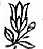

Sevgili Bhagwan,
Cennet bahçesine, nasıl geri gidilir?
Cennet Bahçesini hiç terk etmediniz ki,
Hıristiyanların hikâyesi yanlış.
Bu Hıristiyan hikâyesi hakkında o kadar değişik açılardan konuştum ki -bu güzel bir hikâye ve müthiş bir potansiyeli var. Nerede olursanız olun hala cennet bahçesinde olduğunuz görüşü de hatırlanmalı. Sizi oradan atmaya tanrının bile gücü yetmez; sizi nereye atacak? Zira her yer cennet bahçesidir. Neden bir Hıristiyan ilahiyatçının şu soruyu ikibin yıldır sormadığını hep merak ederim: Tanrı Adem ile Havva'yı cennet bahçesinden attı, peki nereye attı? Varoluşun dışında bir yer var mı?
Her şey içerde, dışarda hiçbir şey yok.
Gerçekliğin sınırları yoktur; gerçeklikten dışarı atılamazsınız. Bu basit bir olgu sadece; hala cennet bahçesindesiniz, sadece uykuya daldınız.
Uykunuz zihninizden, arzularınızdan, rüyalarınızdan, hırslarınızdan, güdülerinizden oluşuyor. Bu saçmalıktan bir kez vazgeçince birden uyanıp cennet bahçesini bulacaksınız. Ve cennet bahçesi tanrıya mahsus değildir, onun tekelinde değildir. O herkese aittir, yaşayan her varlığa -çünkü tanrı sadece dünyada varolan bütün bilinçlerin ortak ismidir; Tanrı bir şahıs değildir.
Bu Hıristiyan hikâyesi Tanrıyı çok çirkinleştirdi. Eğer bu hikâyeyi tekrar yazmak zorunda olsaydım Adem ile Havva'ya vereceğim-ve size de bunu verirdim-ilk talimat şu olurdu: Bilgelik meyvasını yiyin, ebedi yaşamın meyvasını yiyin. Siz nihai bilince aitsiniz, siz ölümsüzlüğe alisiniz.
Siz bir Budasınız. Sadece silkinip kalkmanız gerekiyor.
Çeşitli çilekeşlik uygulaması yapıp kapıları çalmanız, dilenmeniz ve şöyle dua etmeniz gerekmiyor: 'Tanrım, lütfen kapıyı aç. O meyvayı asla yemeyeceğim Ona asla bakmayacağım." Siz ağacın altında oturuyorsunuz. Sadece gözlerinizi açın ve bilgelik sizin olsun, ebedi hayat sizin olsun. Ve bunlar iki ağaç değildir...
Bu hikâye pek çok noktada yanlıştır. Öncelikle, baba olan bir Tanrı sizi ebedi hayattan ve bilge olmaktan alıkoyamaz. İkincisi, bilgelik ve ebedi hayat iki ayrı şey değildir; bunlar aynı deneyimin iki yönüdür.
Size söylüyorum.
Bu Cennet Bahçesi.
Ta Hui,
32. Toplantı
17 Ağustos 1987